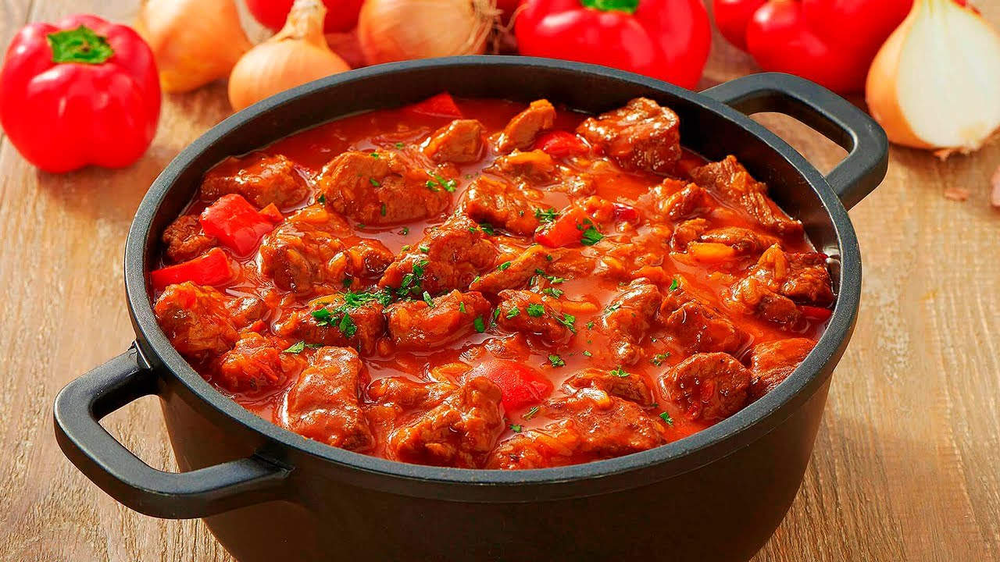

Гуляш
 4.5
4.5
От 15 рублей

Ингредиенты
Сахар
Пшеничная мука
Масло
Соль
Черный перец
Вода
Лавровый лист
Говядина
Томатная паста
Пшеничная мука
Масло
Соль
Черный перец
Вода
Лавровый лист
Говядина
Томатная паста
2 ч.л.
1 ст.л.
6 ст.л.
1 ст.л.
1 ч.л.
0.6 л
1 шт.
700 г.
3 ст.л.
1 ст.л.
6 ст.л.
1 ст.л.
1 ч.л.
0.6 л
1 шт.
700 г.
3 ст.л.

Способ приготовления
Нарежьте мясо кусочками величиной с грецкий орех или несколько крупнее.
Нарубите 2 средние луковицы мелким кубиком и выложите на отдельную тарелку.
В широкую сковородку с толстым дном налейте 6 ст. л. растительного масла. Обжаривайте мясо 15 минут до румяной корочки. Готовьте на сильном огне, постоянно помешивая.
В сковороду выложите нарезанный кубиком лук. Перемешайте ингредиенты лопаткой. Продолжайте готовить до прозрачности лука.
Сдвиньте жарящееся мясо к краям сковороды. В центр выложите 3 ст. л. томатной пасты и 2 ч. л. сахара. Обжарьте томат 1 минуту, а затем смешайте с мясом.
Тушите говядину в томате около 2 минут, а потом влейте 600 мл кипятка. Дождитесь закипания жидкости, накройте гуляш крышкой, огонь убавьте до минимума и оставьте тушиться на 60 минут.
Чистую сковороду поставьте на средний огонь. Когда она разогреется, высыпьте 1 ст. л. муки. Обжаривайте муку 1 минуту или до светло-коричневого оттенка и сразу переложите на сухую тарелку.
Когда пройдет час с начала тушения мяса, положите в него обжаренную муку и соль по вкусу. Тщательно перемешайте гуляш. Прикройте сковороду крышкой и продолжайте тушить еще 30 минут.
За 5 минут до конца приготовления, положите в гуляш черный молотый перец и лавровый лист. Готовый гуляш настаивайте в сковороде еще 10 минут. Подайте его с картофельным пюре, отварным рисом или макаронами.